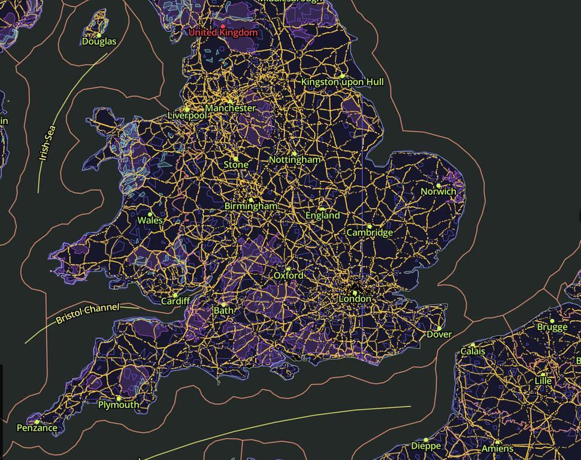Maps
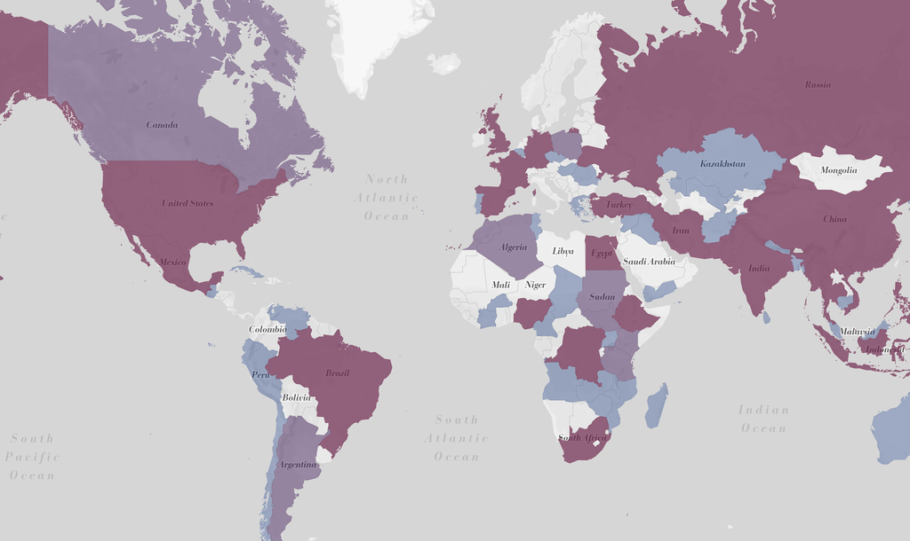Maps
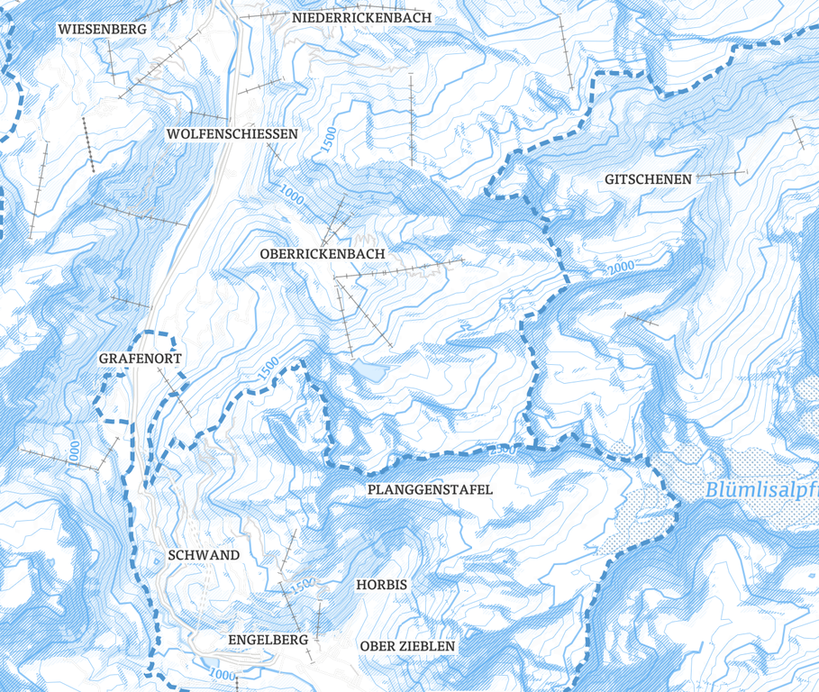Maps
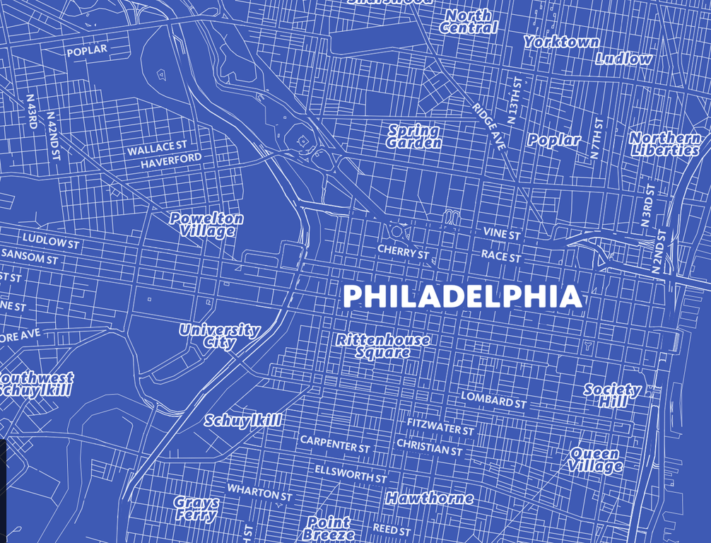Maps
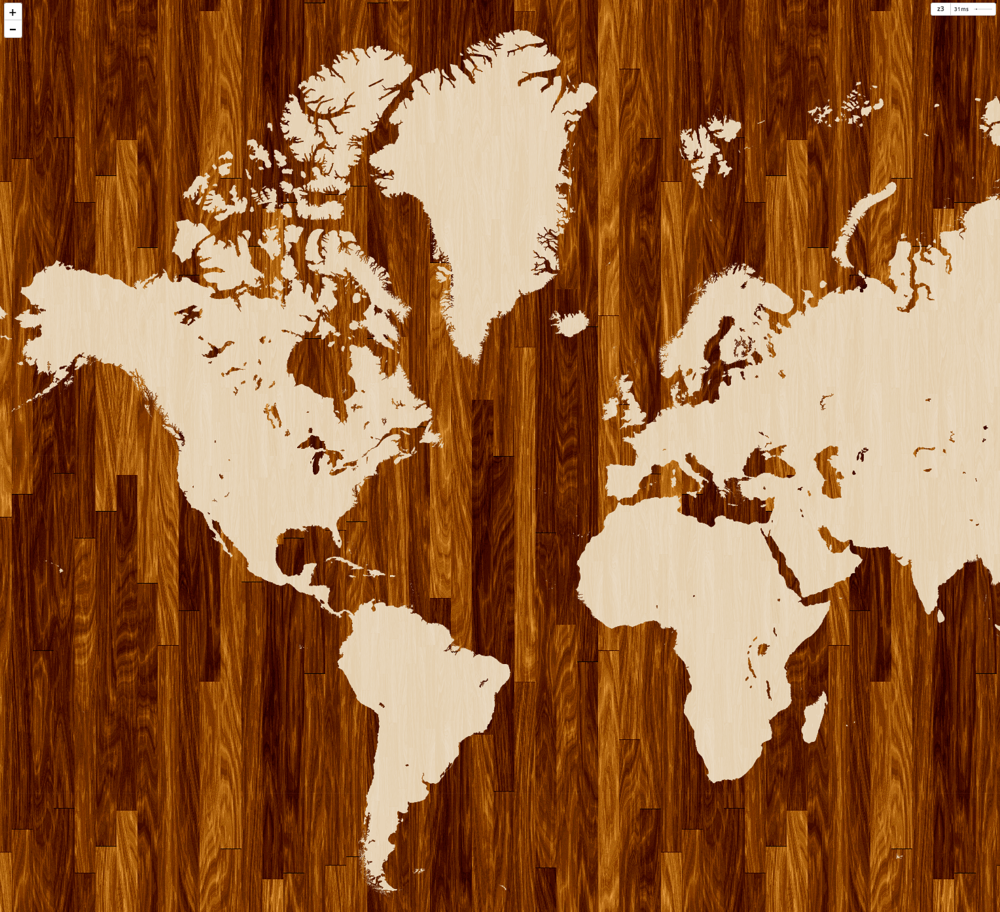Maps

Maps

Maps
Outline
1. Be general
1. Be general
2. Be more specific
1. Be general
2. Be more specific
3. Focus on one solution
1. Be general
2. Be more specific
3. Focus on one solution
4. Focus on the whole picture
1. Be general
2. Be more specific
3. Focus on one solution
4. Focus on the whole picture
5. Troll the teacher
Actual Outline
1. Computing + maps
1. Computing + maps
2. History of mapping
1. Computing + maps
2. History of mapping
3. Third thing?!?
PLEASE interrupt me if you have any questions
1. 💾 + 🌍 ?
Data
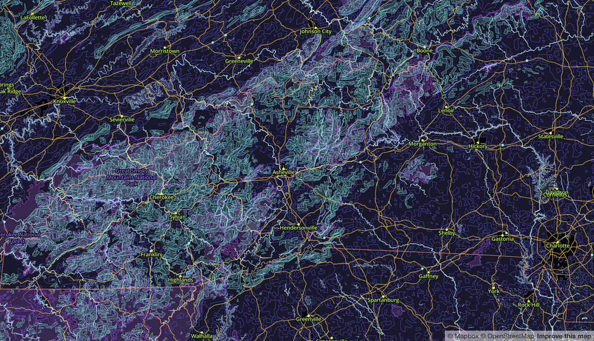
Earth
And everything on it
GIS
G(eographic) I(nformation) S(ystems)
MIS
M(ultimedia) I(nformation) S(ystems)
Storing
Analyzing
Visualizing
Maps depend on application
Roads in Tucson
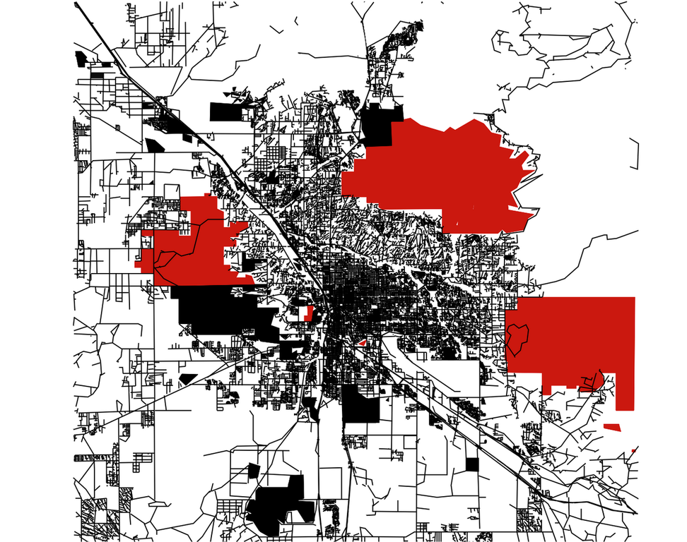
Pollution in the Great Lakes
It takes infrastructure
It takes algorithms
It takes compression
It takes GPU
2. 📜 + 🌍 ?
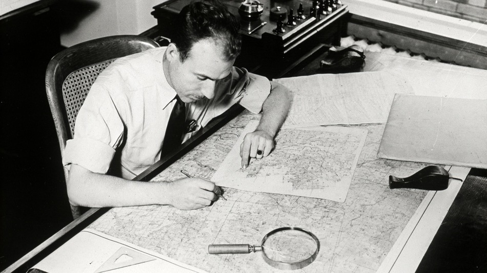
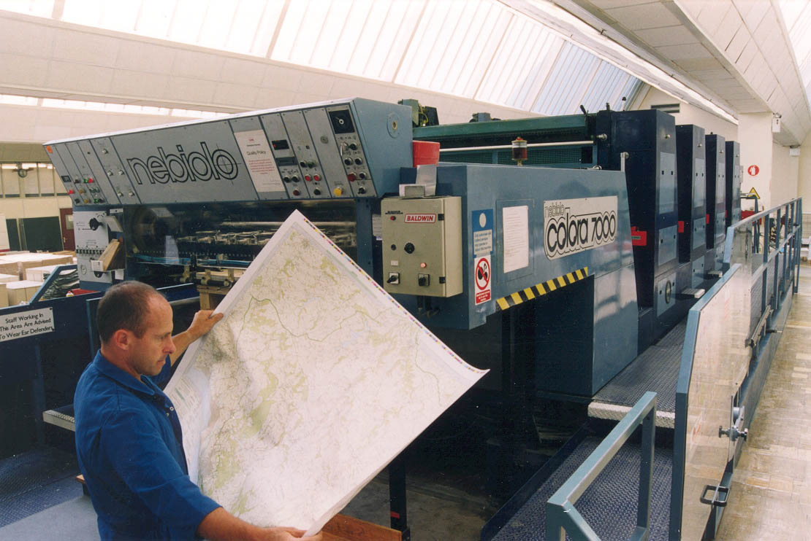
1996: Mapquest launches the first online mapping service
Reloaded every time you moved or zoomed
Lots and lots of images, delivered on demand
2005: Google Maps created
Tiles
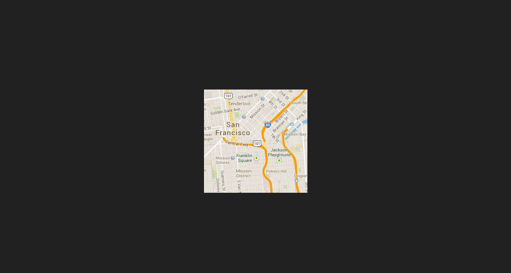

Slippy
2011: Vector Tiles
Render in the client
On the fly
Super fast
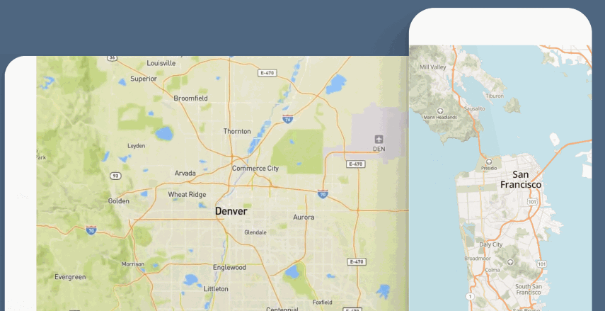
3. Getting Involved
Build an application
Fill a need
Contribute to open data
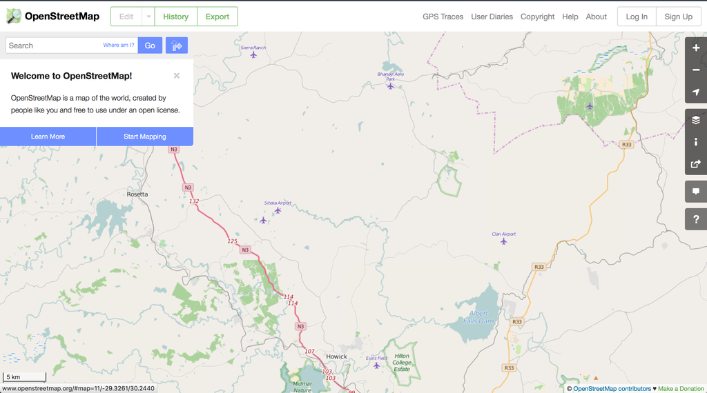
Contribute to open source
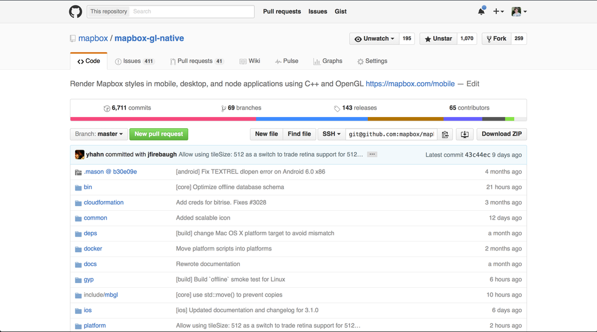
Humanitarian mapping
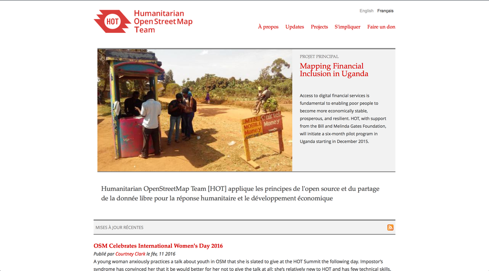
Make the map you want to see of the world